22 advertising engagements in full: the category, the
country, the daily budget, the work as it was done, and 73 screenshots
out of the accounts themselves. Every figure is the account's own over the period its
page names.
5,872Hours on Upwork
100%Job success score
$2M+Budgets optimized
15+Years in paid ads
Talk to a person
Book a call20 minutes, free, with the person who would do the work
Open a roomIts own address, an agent and our people already in it
can only track paid subscriptions (via offline conversions upload).
Objective
Maximize subscriptions within the current budget.
Review
Website audit, UI/UX adjustments recommendations.
US competitors research (manually and with dedicated tools);
Work done
Semantic core creation: target search queries, close ones and more with interest intent to form the funnel;
Campaigns split based on the level of market intent and devices;
DSAs, Pmax, video campaign for broader brand awareness;
Brand and competitors campaigns;
Budgets were selected according to devices demand and срс;
After first crucial month of management, we had enough of data to adjust budgets and bidding strategies according to the account performance;
Always unique ad copies for every ad group with maximum symbols usage and dynamic insertions;
Results Jan ‘26 - Apr ‘26 vs Sep ‘25 - Dec ‘25
Conversions 5,477.86 (+180.26%)
CTR 7.22% (+94.60%)
Cost/conv. $8.98 (-31.17%)
Account Total Jan ‘26 - Apr ‘26 vs Sep ‘25 - Dec ‘25
Despite a slight decrease in impressions, clicks grew by 60% and conv. value/cost doubled (+101%), demonstrating continued efficiency improvements. Ongoing account expansion, bid strategy refinement and campaign structure optimization drive consistent conversion growth.
Clicks 74,482 (+60.00%)
Conv. value/cost 4.12 (+101.48%)
Impressions 1,773,216 (-8.49%)
Case 02
Local lead gen, Personal Injury Law, KRW Lawyers
Category
Local B2C lead gen, personal injury law firm
Website
krwlawyers.net
Country
United States (Texas)
Budget
$1,350 / day
From the account
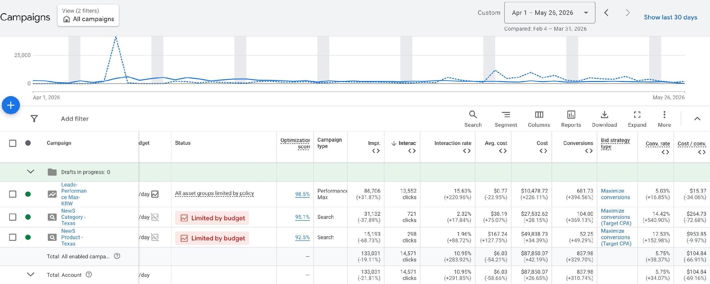
Challenges
Highly competitive market — personal injury law in Texas is one of the most expensive niches in Google Ads;
Account previously managed by another specialist — required full audit and rebuild;
Dual conversion tracking required: calls and form submissions.
Objective
Maximize calls and form submissions (leads) while decreasing cost per conversion.
Work done
Full account audit and rebuild from scratch;
Competitors research and website audit;
Semantic core development: category-based and product-based search for Texas;
Performance Max campaign launch with dedicated audience signals;
Bidding strategy overhaul: switched to Maximize Conversions with Target CPA;
Conversion tracking setup for both calls and form submissions;
Negative keywords lists, bid adjustments by location, device and schedule.
Results Apr 1 – May 26, 2026 vs Feb 4 – Mar 31, 2026
After a full account rebuild from scratch — new campaign structure, Performance Max and updated bidding strategies — conversions grew by 330% and cost per conversion dropped by 67%, despite operating in one of the most competitive legal niches in the US.
Conversions 837.98 (+329.70%)
Cost/conv. $104.84 (-66.91%)
Conv. rate 5.75% (+38.37%)
Clicks 14,571 (+291.85%)
Avg. CPC $6.03 (+26.65%)
Case 03
B2B/B2C lead gen, Legal Services, JuridConsult
Category
B2B/B2C lead gen, sworn translations, legalisation & apostille services
Website
juridconsult.nl
Country
Netherlands (serving international markets)
Budget
€30 / day
From the account
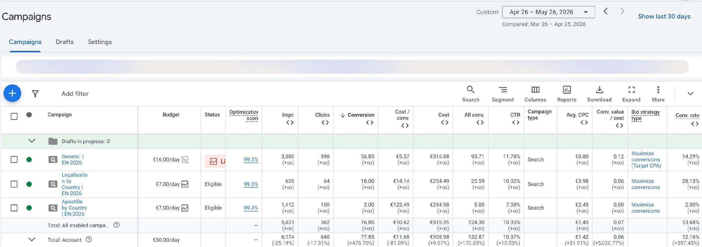
Challenges
Account previously managed by another specialist with incorrectly configured conversions;
Poor campaign structure not aligned with website services;
Limited budget requiring maximum efficiency across multiple service categories and countries.
Objective
Maximize leads (calls, form submissions and chat enquiries) while decreasing cost per conversion within a limited budget.
Work done
Full account and conversion tracking audit;
Conversion tracking rebuild: calls, form submissions and chat enquiries;
Complete account rebuild from scratch with campaign structure aligned to website services (Generic, Legalisation by Country, Apostille by Country);
Semantic core built from website content covering all service categories and countries;
Bid adjustments by location, device and schedule; negative keyword lists.
Results Apr 26 – May 26, 2026 vs Mar 26 – Apr 25, 2026
A full account rebuild with correct conversion tracking and campaign structure aligned to website services delivered a 477% growth in conversions and an 81% drop in cost per conversion — all within a limited €30/day budget.
Highly competitive and expensive niche — enterprise AI/ML in tier-1 markets;
Long B2B sales cycle — conversion is a website signup, not a purchase.
Objective
Drive website signups from enterprise decision-makers in tier-1 markets within a limited budget.
Work done
Full account setup from scratch: GA4, GTM, conversion tracking for website signups;
Competitor and market research for enterprise AI/ML niche;
Performance Max campaign for broad reach and lead generation;
Search split by product and brand coverage for USA and UK+EU separately;
YouTube Shorts campaigns for brand awareness testing;
Bid strategy: Maximize Conversions with Target CPA; bids, budgets and audience signals.
Results Mar 1 – Apr 30, 2026 vs Feb 2 – 28, 2026
Launching a new enterprise AI brand from zero in tier-1 markets, a full-funnel campaign structure — PMax, Search and YouTube Shorts — delivered 171% growth in signups and a 10x increase in impressions within the first two months.
Conversions (signups) 19 (+171.43%)
Interactions 117,996 (+171.43%)
Interaction rate 39.16% (+62.22%)
Avg. cost $0.05 (-82.57%)
Case 05
B2C & B2B SaaS, Vehicle History Reports, VinDocs
Category
B2C & B2B SaaS, vehicle history reports
Website
vindocs.com
From the account
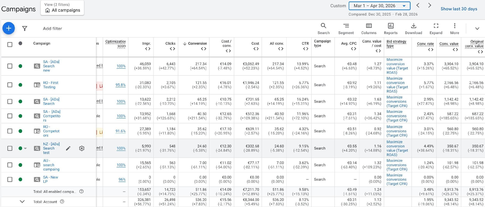
Countries: South Africa, Romania, New Zealand, Australia
Budget: $325 / day
Challenges
Multi-country campaigns across 4 markets with different demand levels and CPCs;
Dual audience: B2C (individual buyers) and B2B (dealerships, fleet businesses).
Account previously managed by another specialist — required full audit and rebuild;
Objective
Maximize purchases across all markets while improving ROAS and reducing cost per conversion.
Work done
Full account audit and complete rebuild from scratch;
Separate Search campaigns per country with dedicated ad copies, keywords and budgets;
Separate B2B landing page campaigns (SA) targeting dealerships and fleet businesses;
Competitors campaigns per market;
Bidding strategies: Target ROAS for high-volume markets, TCPA for developing ones;
Ongoing bid, budget and keyword optimization across all markets.
Results Mar 1 – Apr 30, 2026 vs Dec 30, 2025 – Feb 28, 2026
After a full account rebuild with country-specific campaign structure and tailored bidding
Conversions (purchases) 511.86 (+25.77%)
Cost/conv. €14.09 (-10.24%)
Conv. value/cost 1.24 (+11.05%)
Clicks 14,723 (+14.75%)
CTR 9.58% (+15.13%)
strategies, purchases grew by 26%, cost per conversion dropped by 10% and ROAS improved
across all 4 markets simultaneously.
Case 06
B2C SaaS, Tech Mock Interview
Category
B2C SaaS, mentorship and recruiting
Website
techmockinterview.com
Country
Canada
Budget
CA$1,500 / mo
From the account
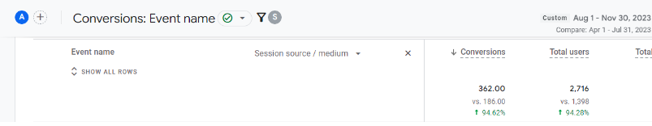
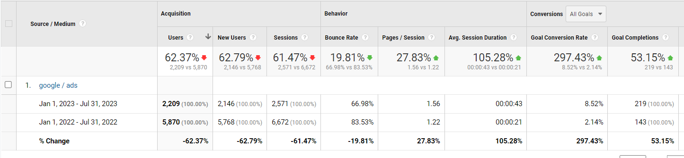
Challenges
Significant competition in the Canadian market;
Unknown brand — new startup with no prior paid ads history;
Limited budget; only paid signup conversions tracked.
Objective
Minimize CPA while maintaining paid signups within a limited budget.
Work done
Competitors research in Canada and website audit;
Semantic core: target queries, close variants and interest-intent keywords to form a full funnel;
Campaigns split by market intent level and device;
PMax and competitors campaigns;
Custom ad copies per ad group with callouts and dynamic keyword insertion;
Micro and macro conversion goals setup; bid and budget adjustments after first month of data.
Results Aug ‘23 – Nov ‘23 vs Apr ‘23 – Jul ‘23
Conversions grew by 94.62%
Results Jan ‘22 – Jul ‘22 vs Jan ‘23 – Jul ‘23 (year-over-year)
Seasonality barely affected KPIs due to proper ongoing optimization. Budget remained the same throughout.
Conversions grew by 53.15%
Conversion rate grew by 297.43%
Challenges
significant competition;
unknown brand - new startup;
limited budget;
only paid signup conversions;
Objective
Minimal CPA still with purchases within the limited budget.
Review
Website audit and recommendations.
Competitors research in Canada;
Work done
Semantic core creation: target search queries, close ones and more with interest intent to form the funnel;
Campaigns split based on the level of market intent and devices;
Pmax and competitors campaigns;
Custom ad copies for every ad group with callouts and dynamic keywords insertion;
Keywords and cross-negative keyword lists;
Micro and macro goals (primary and secondary conversions) setup
After first crucial month we adjust budgets bids / bidding strategies according to the performance;
Results August ‘23 - November ‘23 vs April ‘23 - July ‘23
Conversions grew by 94.62%
Results January ‘22 - July ‘22 vs. January ‘23 - July ‘23 (prior Universal GA data)
Seasonality almost didn’t affect the KPIs much, because of the proper ongoing optimization.
Important: Budget remained the same.
Conversions grew by 53.15%
Conversion rate grew by 297.43%
Case 07
Google Grants, Nonprofit App, Pfotenpiloten / DogMap
Category
Google Grants for nonprofits, dog-friendly places app
Website
map.pfotenpiloten.org
Budget
Google Grants ($10,000/mo limit) — ~$9,900/mo fully utilized
From the account
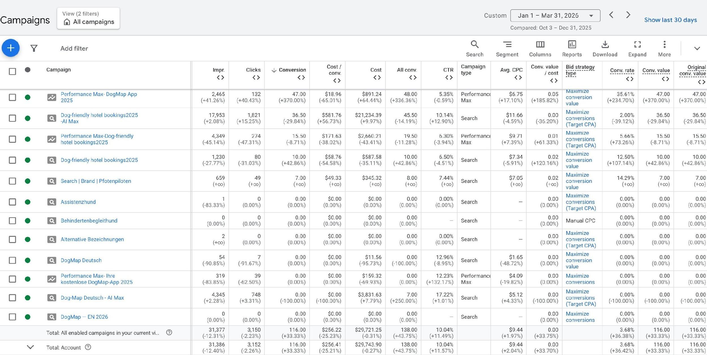
Challenges
International audience across 23 languages with multilingual campaign needs;
Maximizing the full $10,000/mo grant spend while maintaining quality score and CTR.
Account previously managed — all campaigns required a full audit and rebuild;
Objective
Maximize app registrations and DogMap downloads while fully utilizing the Ad Grants budget.
Work done
Full account audit and complete rebuild of all campaigns;
New Performance Max campaigns launched alongside rebuilt Search campaigns;
All ad copies rewritten to meet Google Grants quality and CTR requirements;
Ongoing monitoring CTR above 5% threshold and keep the account compliant with policy.
Results Jan 1 – Mar 31, 2026 vs Oct 3 – Dec 31, 2025
A full Google Grants account rebuild — new PMax and Search campaigns, rewritten ad copies — delivered 33% more conversions, 25% lower cost per conversion and CTR above 10%, while fully utilizing the grant budget.
Grant budget ~$9,900/mo fully utilized (vs partial spend previously)
Case 08
B2B SaaS, subscription payments platform, AppHud
Client
Skyrocket your app growth with a revenue data suite. Covers every aspect when it comes
From the account
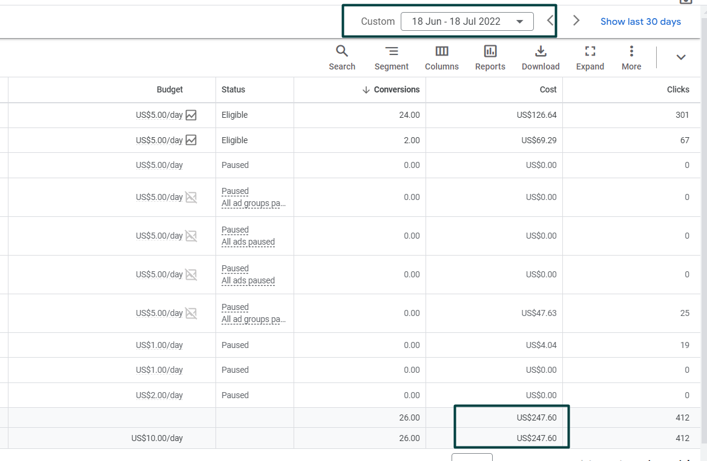
to in-app subscriptions from integration to analytics on iOS and Android
Location: США
Objective: More registrations for less CAC
Account: since 2022.
Work done
1. Competitors ads review 2. Worked on the semantics from website content 3. Developed campaigns according to product categories 4. Competitor campaign 5. DSA campaign with all possible dynamic targets.
6. Bids adjustment according to locations, demographics and devices 7. Regular stat monitoring, traffic changes and other metrics 8. Account structure:
First month performance data 19.05.2022 - 18.06.2022:
Search campaigns;
DSA campaigns;
Display campaigns to increase reach and brand awareness.
User created account 18
Cost $247.60
СРА $13.76
Case 09
B2B lead gen, HR training for IT
From the account
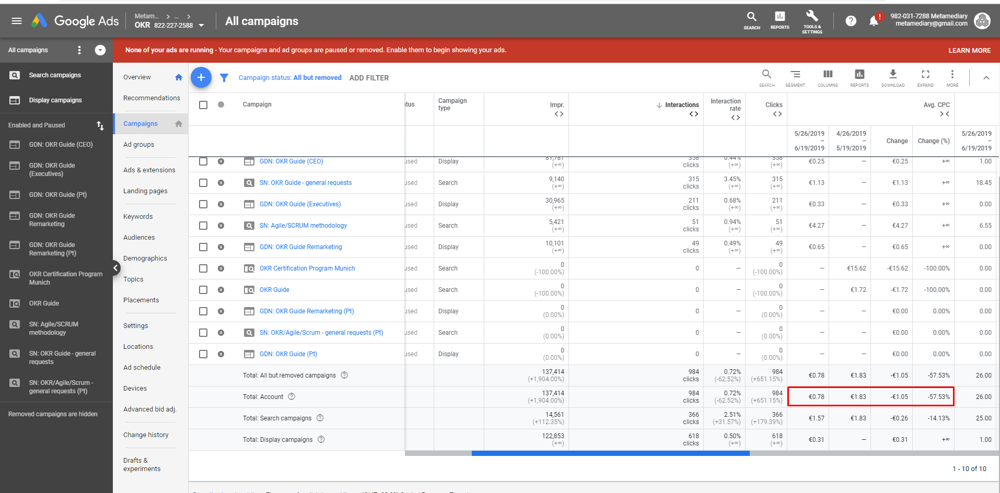
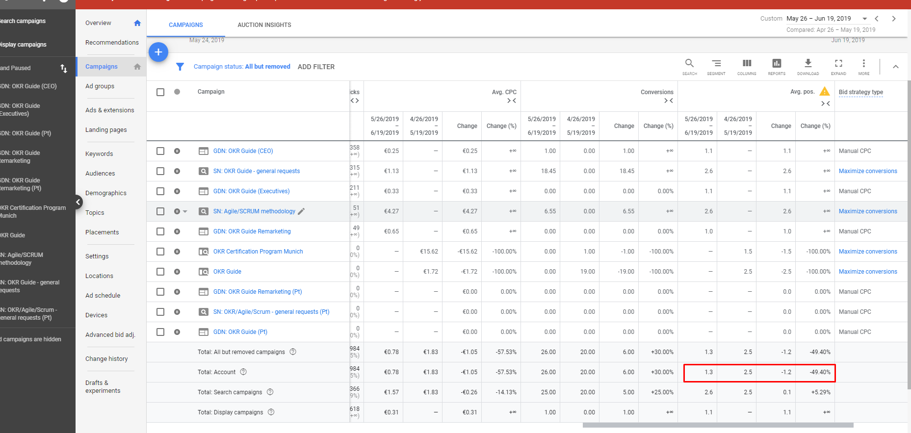
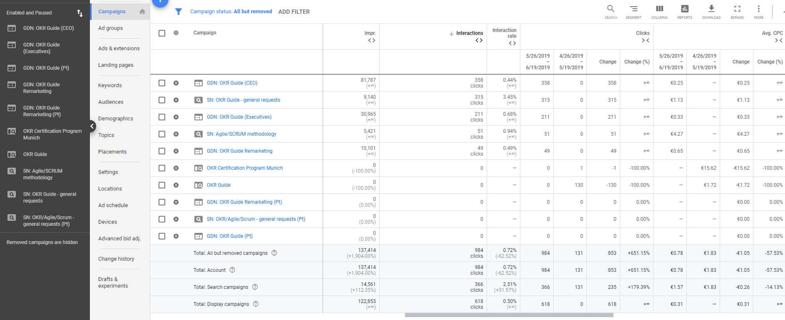
Optimization tasks
1. Detailed semantics for Search Ad campaigns 2. TA profiles analysis and campaigns launch through Google Display Network 3. Remarketing campaigns development 4. Creatives for cold audiences
Results
KPIs performance from 26/05 - 19/06 in comparison to 26/04 - 19/05 - Conversions growth of 30% - CPC decrease of 57.53% - Average position improvement of 49%
This led to significant target traffic growth - Clicks increased by +651%
Case 10
Local lead gen, Divorce & Family Law
Client
Lawyer group from Colorado.
Location
Colorado, United States.
Account
Active since December 2017
Start
March 2020
From the account
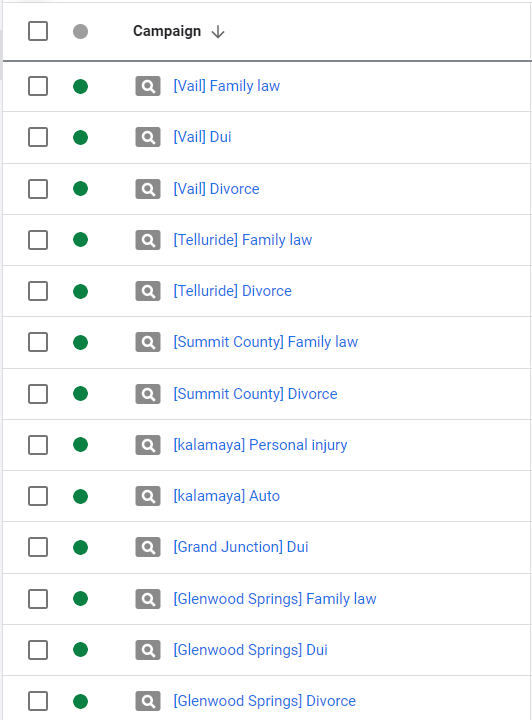
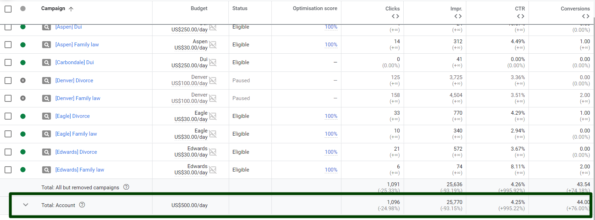
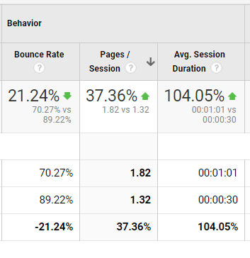
Initial state
According to the account analysis, the decision of developing from scratch was resolved:
broader and more detailed semantics;
website and landing page content;
specific URLs for every location and service.
Campaigns development
1. Semantics were collected according to website services and TA.
2. Redistributed semantics to separate search campaigns with dedicated ad copies.
3. Separate URL for every location + service (28 total).
4. Separate budgets according to semantics and demand.
5. Bid adjustments according to age, gender and household income.
6. Observations for interest audiences to every campaign.
We’ve continuously delivered monitoring and analysis of search queries / keywords, bid adjustments and budgets, and demand changes according to all the KPIs in Google Ads and
Google Analytics.
The COVID 19 factor wasn’t definitely “beneficial” for the divorce growth, so the comparison to the previous period performance does reflect the actual optimization case.
Campaign performance for Mar 2020 - Dec 2020 vs Feb 2019 - Nov 2019
Results
Impression 25,770 (-93%)
CTR 4.25 (+995.25%)
Conversions 44 (+76%)
Bounce Rate 70.27% (-21.24%)
Pages / Session 1.82 (+37.36%)
Avg. Session Duration 01:01 (+104.05%)
Number of impressions/clicks decreased - this is because we assembled TA and semantic core fully corresponding to website services, and potential clients searches with service name in every query. Thus, irrelevant and general search queries were cut off. However, this grew CTR by 995.25%, which means the TA was reached.
Despite impressions/click decrease, calls from website conversion grew by 76%.
Bounce Rate 70.27% (-21.24%)
Pages/Session 1.82 (+37.36%)
Avg. Session Duration 01:01 (+104.05%)
Clicks 1,096 (-25%)
Conclusions
The most crucial task is to create TA and focus on it.
The next steps after search campaigns development:
Branding via GDN;
YouTube for interest categories;
Local campaign;
Competitors’ campaigns (search; GDN).
Google My Business account improvement (+maps),
Facebook, Instagram, LinkedIn
Case 11
Local lead gen: 2 Pest Controls
Optimization tasks
Current campaigns analysis. a. Upon analysis we’ve decided to partially retain the previous campaigns. b. Priority channels:
Search network
Remarketing
Video campaigns
Campaigns development
b. Redistributed the semantics according to brand, insect types and services.
Performance during first two months:
Impression: 44,819 (+23.40%)
CTR 4.56 % (+3.27%)
CPC $9.85 (-14.55%)
Call Rail Phone Call Conversions: 288 (+26%)
Clicks: 2,044 (+27.43%) a. Semantics was collected with regards to the website content as well as from the previous campaigns data.
Results were satisfactory, but a significant part of optimization tasks still require completion
Primarily this consists of the ongoing work to increase semantic core growth as well as adjustment of current keywords and negative keywords. Bids were also adjusted according to demographics, household income, devices, geo locations and season.
Performance data for the period 06/03 - 05/05 vs previous period
Impression 524,397 (+1 060.30%)
CTR 6.22 % (+20%)
CPC $7.18 (-27%)
Call Rail Phone Call Conversions 519 (+80%)
Assisted conversions:
Clicks 4,630 (+125%)
Call Rail Phone Call Conversions 71 (+7.60%)
Conclusions
The challenge was to beat a large number of aggressive competitors with a limited daily budget.
We committed a huge number of hours for the initial development of keywords and semantics, taking into account the large repertoire of insects. In particular, it was important to create a proper account structure in particular, and to categorize campaigns according to locations and insects, for better performance analysis. We also prepared engaging ads and ad extensions. Bids were adjusted according to location, gender, age, devices and household incomes. The objective was also to scale, so we were monitoring everything on a daily basis.
Main reasons for jump in KPIs:
1. Keywords. We’ve collated all possible targeted keywords and have kept monitoring search queries, for continual semantics growth, suspension of non-converters and keywords optimization, according to CTR, CPC and CPA.
2. Negative keywords. Continual exclusion of traffic relating to irrelevant search queries, and initial preparation of negative keyword lists on a daily basis.
Strategies. Experimenting with bidding strategies, to maximize KPIs
A growth in call conversion growth by +300% is a result that has undoubtedly exceeded expectations. The seasonal demand of the business is a sensitive factor for further account adjustment, strategy experimentation and semantics development.
Local lead gen: Pest Control #2
Contract from 2021 till November 2023
SEM platforms: Google Ads; Microsoft Ads.
Goal: Receive calls and form submissions at minimum CPA
Leads: Form submission, calls.
Location: NY (Nassau County; Suffolk County)
Work done
Important: Budgets were limited for both Google Ads and Bing Ads, so we launched different campaigns by location, paying attention to demand and seasonality.
Bing Ads August 2023 - November 2023 vs April 2023 - July 2023
January 2022-July 2022 vs January 2023-July 2023 (the previous version of analytics, data was recorded only until July 2023)
Conversions grew by 403.83%
Conversion rate grew by 342.76% google/cpc August 2023 - November 2023 vs April 2023 - July 2023
January 2022-July 2022 vs January 2023-July 2023 (the previous version of analytics, data was recorded only until July 2023)
Conversions grew to 53.15%
Conversion rate grew by 297.43%
Competitors’ activity review;
Website audit and recommendations;
Detailed semantics for all the website offers;
Negative keyword lists;
Proper keyword split between campaigns and ad groups;
Custom ads and call to actions for every ad group;
All ad assets possible;
Goals.
Conversions increased by 82.74%
Conversions grew to 94.62%
Results summary
The total number of conversions has been increasing even during the winter period, when demand was low. We were able to increase the number of conversions by delivering ongoing optimization, CPC and categories based on seasonality.
All this time, the work was aimed at increasing the number of conversions within the existing budget.
Important:The size of the budget has not changed all this time.
From the account
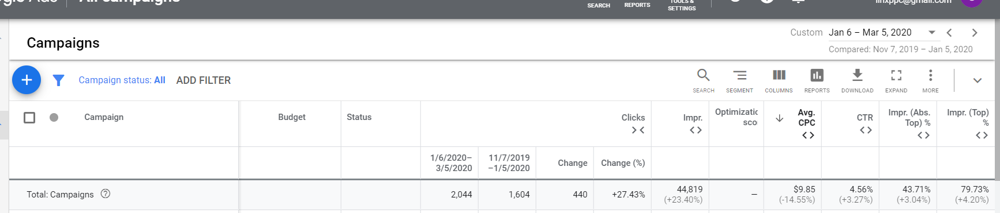
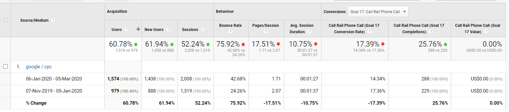
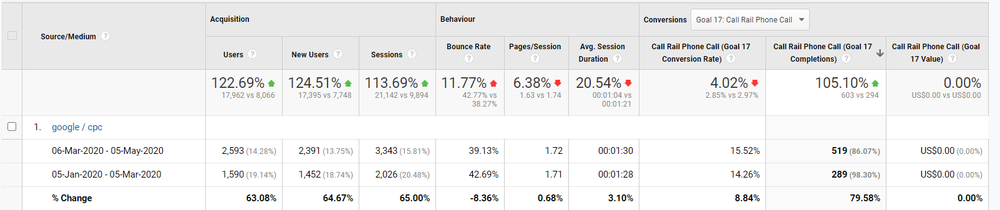
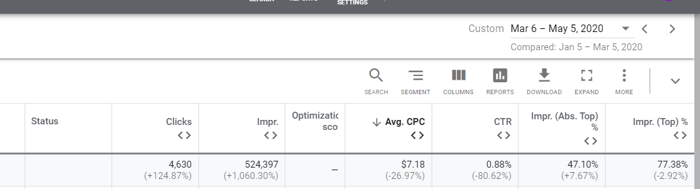
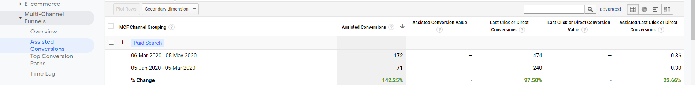
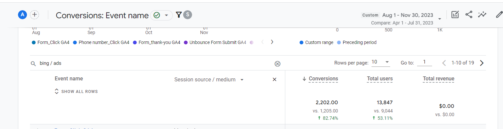
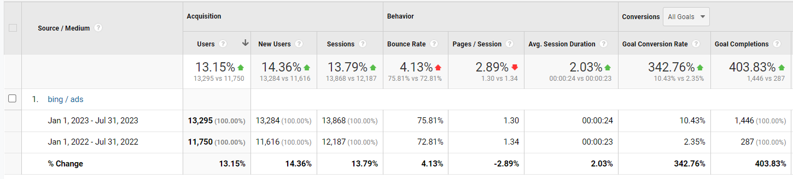
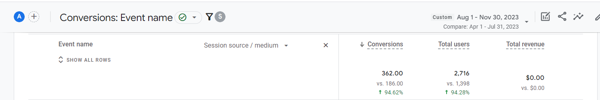
Case 12
B2B Mobile app, MyOpportunity
Category
Business and social networking app
Website
myopportunity.com
Country
US
Budget
$25,000 / mo - obviously not enough to compete with LinkedIn or Bumble
From the account
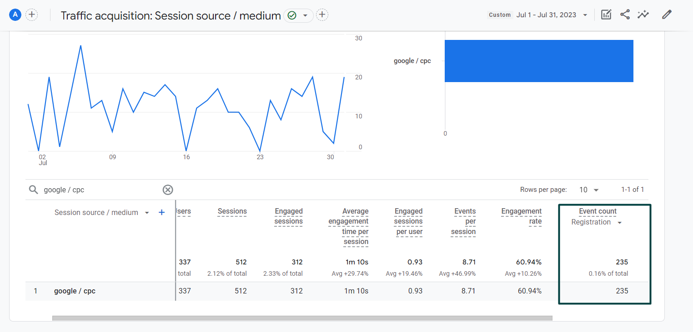
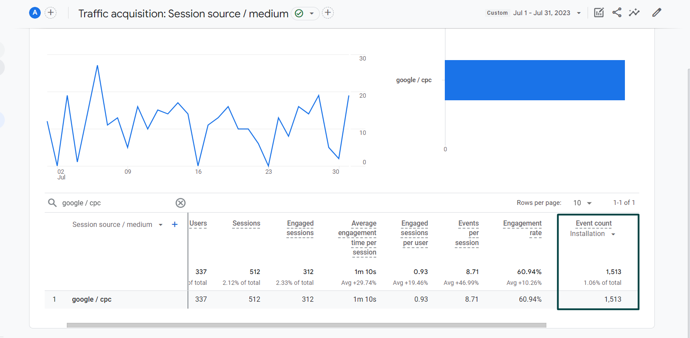
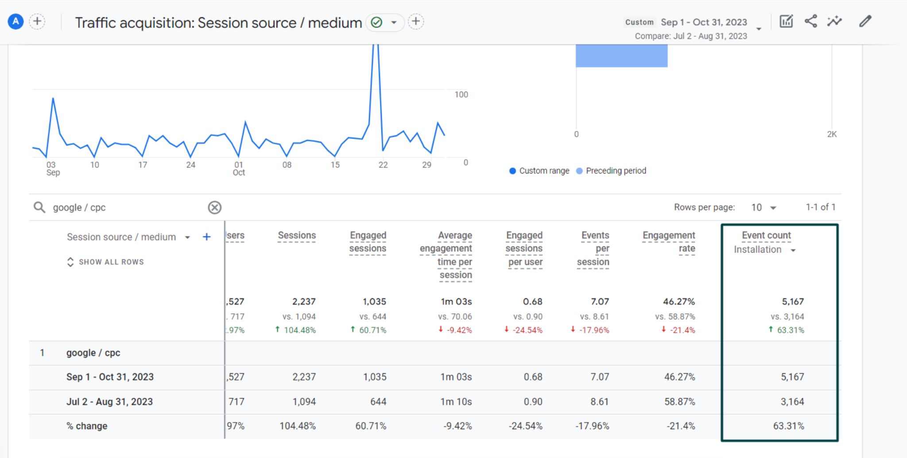
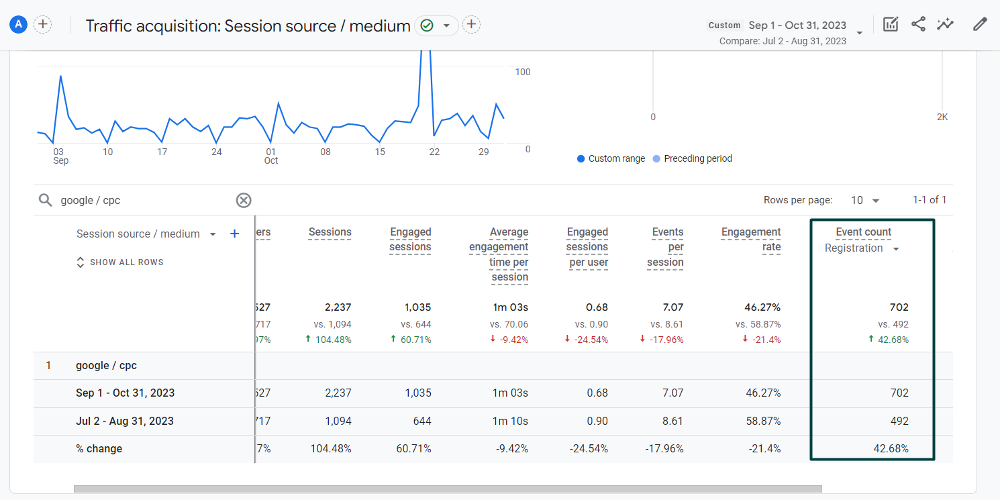
Challenges
Previous SEO team apparently used a lot of bot traffic to deceive the client.
Emerging highly competitive niche;
Objective
Target conversion: new users registrations and installs;
Review
Website audit and recommendations.
US competitors research;
Work done
semantic core, only targeted search queries;
campaigns split according to search queries and devices;
DSA, Pmax, video campaigns for reach; brand, competitors ones - for brand awareness;
Budget - according to devices demand and CPC;
Budgets and bids / bedding strategy adjustment after first crucial month;
Custom ad copies with custom callouts for every ad group;
Results: July ‘23
СРА $16.52
Signups 235
СРА $106.38
Installs 1,513
Results September-October ‘23 vs July-August ‘23 (same budget)
Installs 5,167 (+63.31%)
Signups 702 (+42.68%)
Case 13
B2C Mobile Game App: Scorpion War Robot Transform
Category
Mobile games
Country
US, UK, AUS, NZ, CA, APAC
App: https://apps.apple.com/app/id1580364578?mt=8
Challenges
Initially only SEO with organic 50 - 80 daily installs.
Objective
Get more installs of iphone app 3. Competition review per each country
Work done - different locations split
US Campaign
New Daily Budget: $70 Initial Daily Budget: $7
New CPI: $0.31 Targeted CPI: $0.41
UK, NZ, CA, AUS Campaign
New Daily Budget: $15 Initial Daily Budget: $5
New CPI: $0.19 Targeted CPI: $0.26
Asia Campaign
New Daily Budget: $18 Initial Daily Budget: $7
New CPI: $0.06 Targeted CPI: $0.08
From these 3 campaigns we got 10,611 installs by spending $1806 and the source of revenue is
AdMob. Google Ads helped us to boost organic downloads in the App Store as we got 10611 installs from Google Ads but 29000+ install in firebase.
We didn’t earn from admob but from in-app-purchase 29000+ installs in firebase
Google Ads brought more installs for games on the App Store, but it also boosted revenue as well as organic ranking inside the store for up to 2X more installs than from Google Ads.
From the account
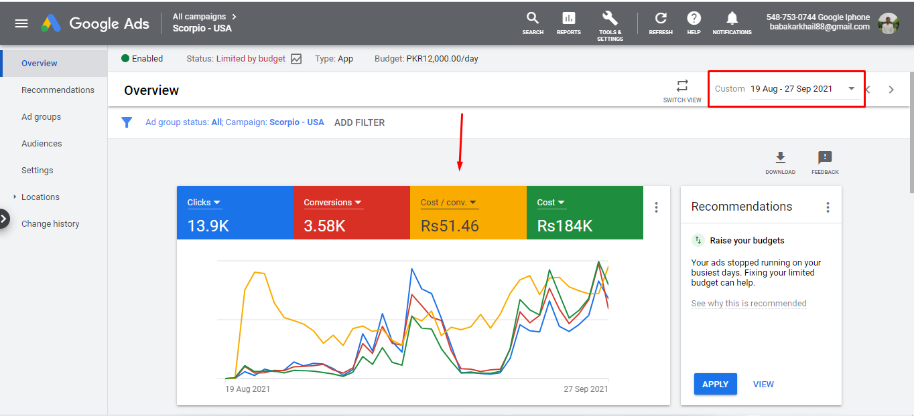
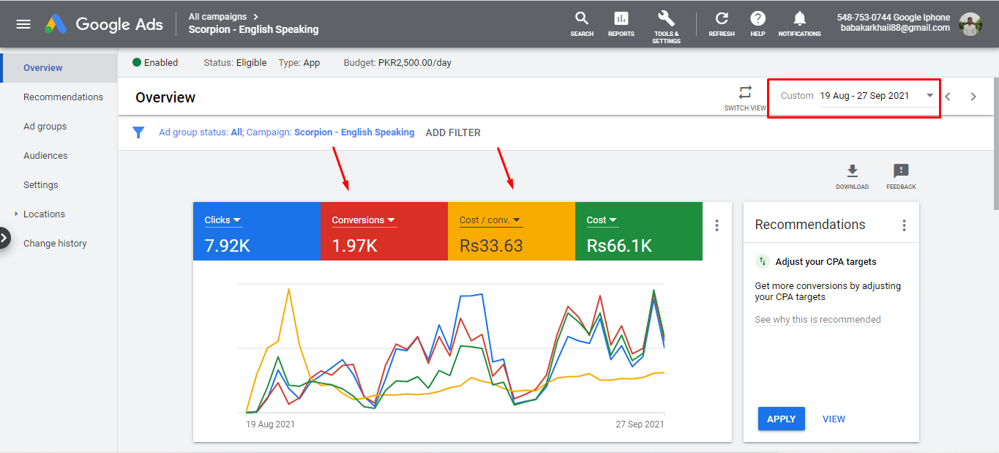
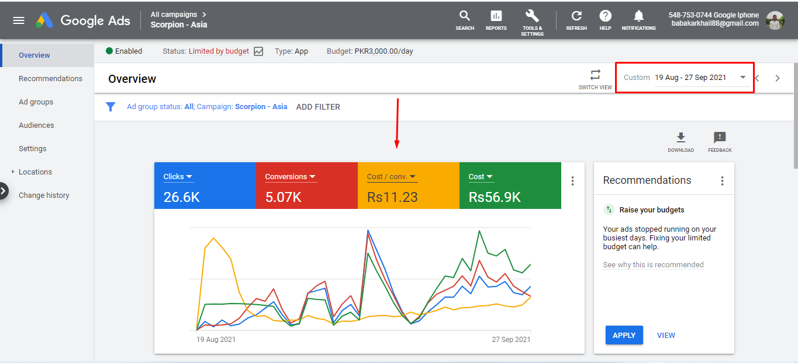
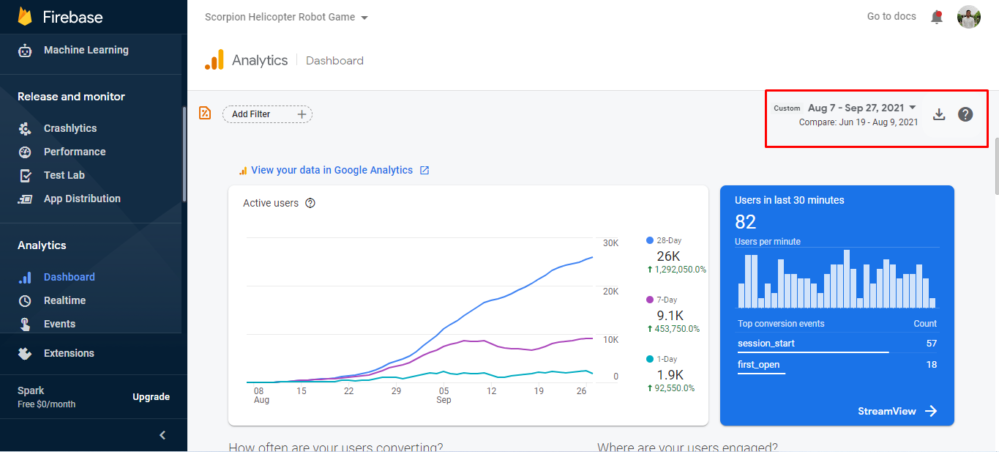
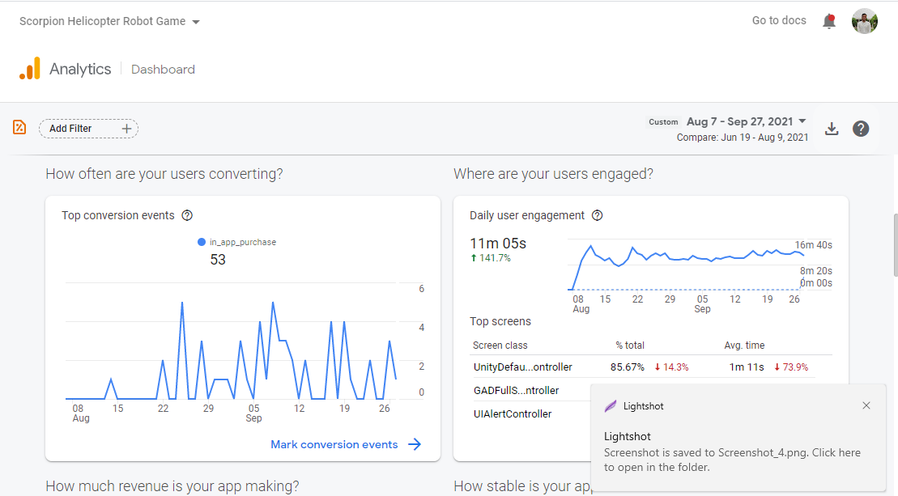
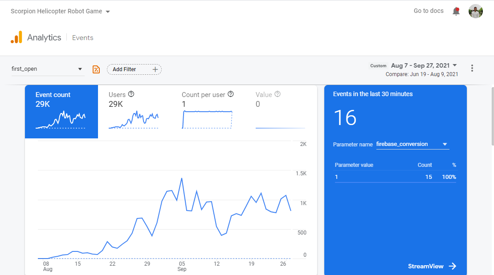
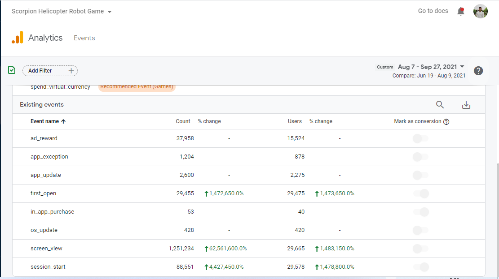
Case 14
Google Ad Grant for Nonprofit: Orphanage
Client
Orphanage (Nonprofit)
From the account
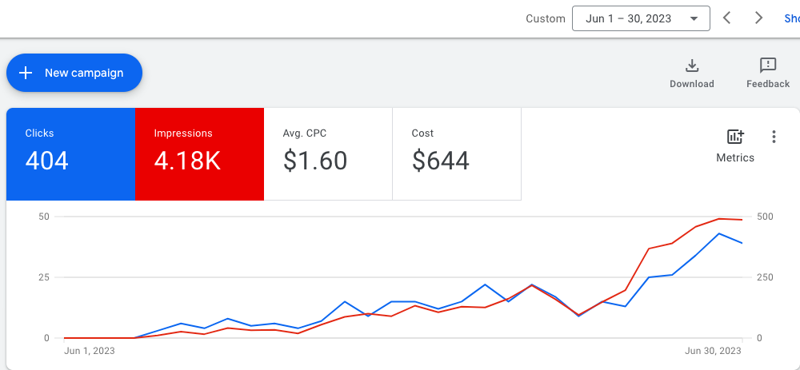
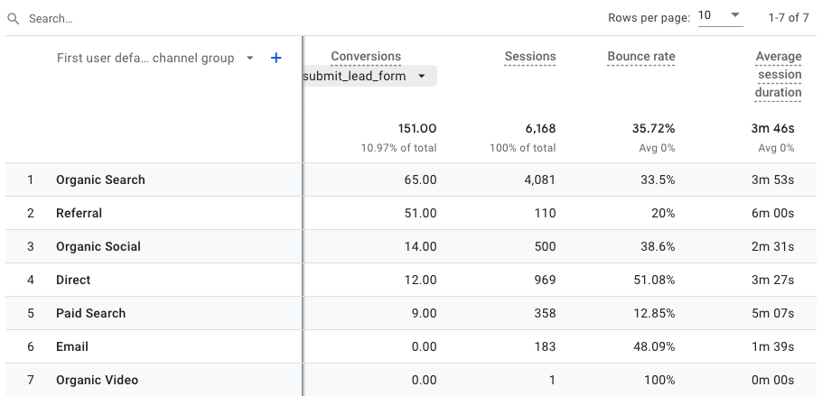
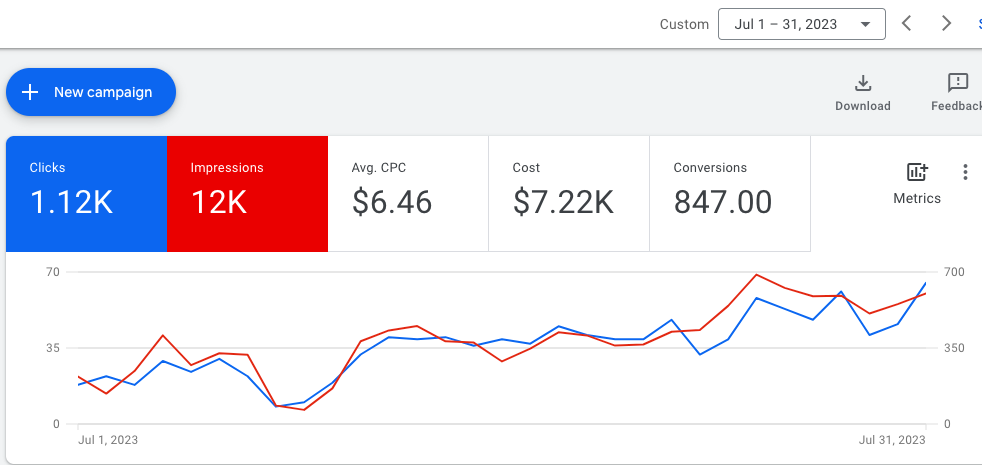
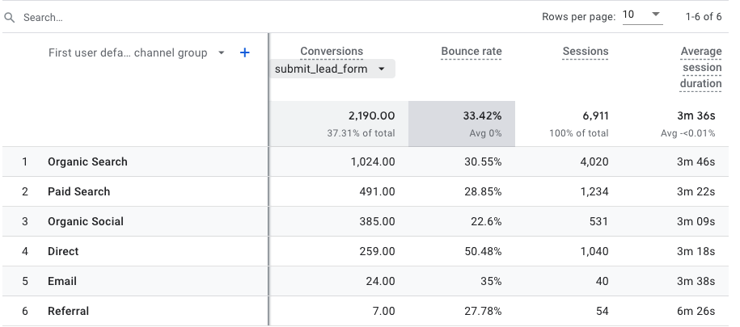
orphans
Account: Active since June 2023
Task: Develop and launch Google Ad Grant account
.
Market analysis
The competition in this niche is very high.
Targeting selected countries with high standard of living to start with.
Grant accounts are limited to a maximum price per click of up to $2.
Competitive keywords in this niche cost more than $2, so it is necessary to make a shift of bidding strategy to maximum conversions to be able to bid for expensive keywords.
Campaign development
Impression 4180
CTR 9.67
Conversions 9
Avg CPC $1.6
Bounce Rate 12.85%
Session 358
Av. Session Duration 05:07
Impression 12000
CTR 9.67
Conversions 847
Avg CPC $6.46
Bounce Rate 28.85%
Session 1234
Av. Session Duration 03:22
Gathering semantics in the given niche.
Creating search campaigns and ad groups based on site content and with different targeting for each country.
Creating Responsive Search Ads.
DSA Campaign Creation.
Created various audiences in Google Analytics 4.
Configured conversion goals in Google Analytics 4.
Overview June 2023
Conversions
Clicks 404
Overview July 2023
Conversions
Clicks 1120
Results
491 submit lead _ _ form, 356 assisted conversions.
In a month and a half, we got enough conversions to switch to the account bidding strategy to maximize conversions. This gave us the opportunity to bid for more relevant and more expensive keywords in the Google Ads auction: as a result, conversions increased.
Completed tasks:
Search query review - we always track and analyze search queries to grow negative keyword lists, as well as to add convertible queries as keywords;
Create new campaigns according to new services on website;
Review of audience performance, new audience testing;
We’ve grown this project from zero and delivered results almost from the start. Currently, we deliver optimization for increasing KPIs and quality scores in the account.
Case 15
eCom, nutraceuticals, Solv Wellness
Category
nutraceuticals for women’s health
Country
US
Budget
$16.000.00/mo
From the account
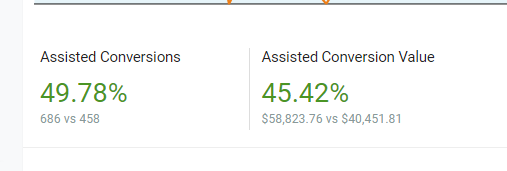
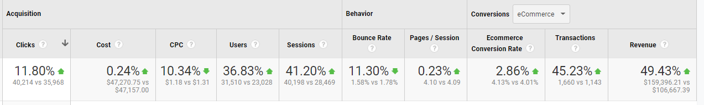
Challenges
high competition;
brand semantics is under active attacks by competitors;
Objectives: Grew sales, increase ROAS, and decrease CPA
3. Preparations:
Account settings audit;
Campaigns setup audit;
Previous performance review, improvement areas;
Competitors research.
Work done
3. 01.05 - 01.07.2023 vs 01.0.
- 30.04.2023
Assisted Conversions
Keywords review and semantics core restructuring and expansion;
Ad copies were reviewed and customized to every add group;
Sales audit to optimize and regroup Shopping campaign;
Ad assets expansion and improvement.
Transaction increase by 45.23%
СРА decrease by 31.7%
Conversion rate increase by 2.86%
ROAS increase by 49%
Transaction +49.78%
Assisted Conversion Value +45.42%
Case 16
eCom, Matcha Outlet
Category
Matcha tea wholesale.
Country
US
From the account
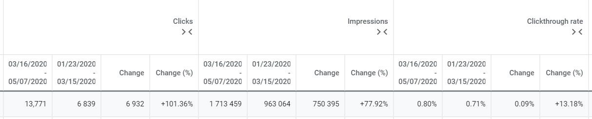
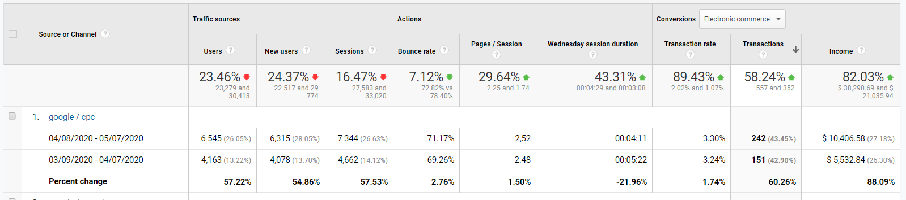
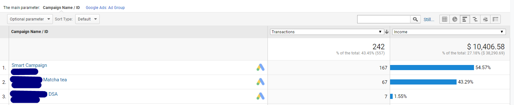
Objective: Grow sales, decrease CPA
2. Audits and strategy:
1. Campaigns performance audit, new campaigns plan as well as keep current performance.
2. Campaigns split according to categories, each brand separate ad groups.
3. Setup and optimization work done:
1. Detailed and expanded semantics.
2. Campaigns split according to categories, each brand separate ad groups.
3. Campaigns performance audit, new campaigns plan as well as keep current performance.
4. DSA campaigns with all possible dynamic targets.
5. Smart Campaign optimization: a. Paused low performers; b. CTA improvement; c. Bidding strategy adjustment from max. conversions to max. ROAS 250%.
6. Bids adjustments according to locations, demographics and devices.
7. Ongoing monitoring and adjustment.
18.03 - 07.05.2020 vs 18.01 - 07.03.2020:
Results
1. Transactions grew by 60.26% 2. Revenue grew by 88.09% 3. Clicks and Impression grew by 101.36% and 77,92% accordingly 4. CTR increase by 13,18%.
5. New users +54,86%
Campaigns data:
Conclusion
Initially the account had too broad semantics and so was a waste of budget. Smart campaign wasn’t performing well as the most of the spent went on non convertible products.
We filtered most of the keywords and kept as well as expanded more of brands related. This let us reach a more warmed audience.
Initial ad copies didn’t have a compelling CTA as well as custom enough headlines and descriptions. All possible ad assets were also added.
Case 17
eCom, apparel, 8x ROAS (Ace Vestiti)
Optimization tasks
1. Detailed semantics of search campaigns 2. Quality score improvement 3. Smart shopping campaign setup and optimization 4. Bids, keywords, negative and cross negative keywords adjustment
Results
Data from Google Analytics for the period 16/10 to 31/10 vs the previous period:
Transaction rate: 4,03% (+ 73.31%);
Revenue: +203.6%;
Assisted conversions* (transactions) 39:
* Assisted conversions - reached goals, which had Google Ads step in their paths
NB. Due to campaigns’ overall efficiency, the direct traffic transactions have also grown:
(this means that users have visited the website through Google Ads, but then visited again via organic search or by directly typing the website URL)
Transaction rate: 1.94% (+ 32.12%);
Revenue: +62.39%;
Transactions: 60 (+185.71%);
Assisted conversions path: (unique interaction chains, which triggered conversions):
Path length (last click steps):
Transactions: 65 (+58.54%);
From the account
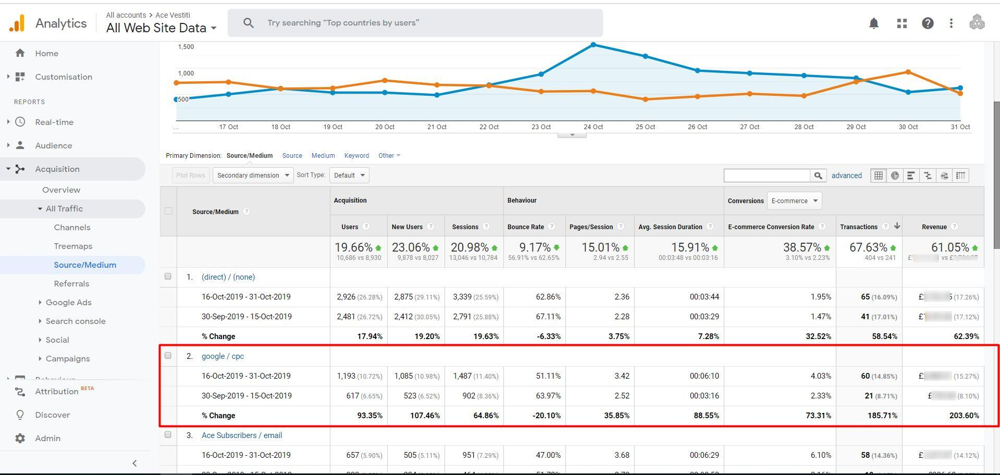
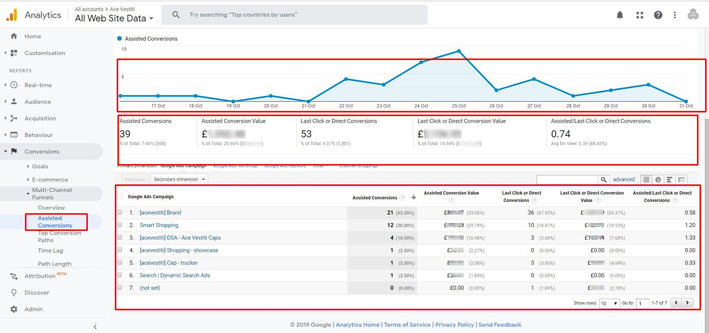
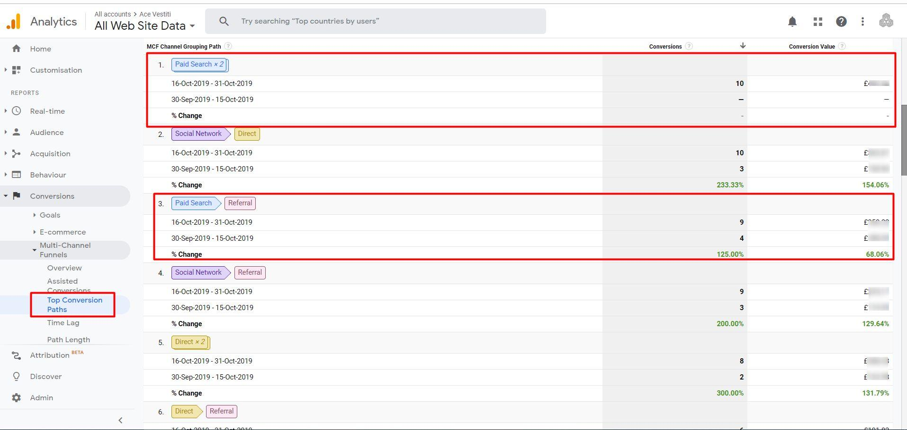
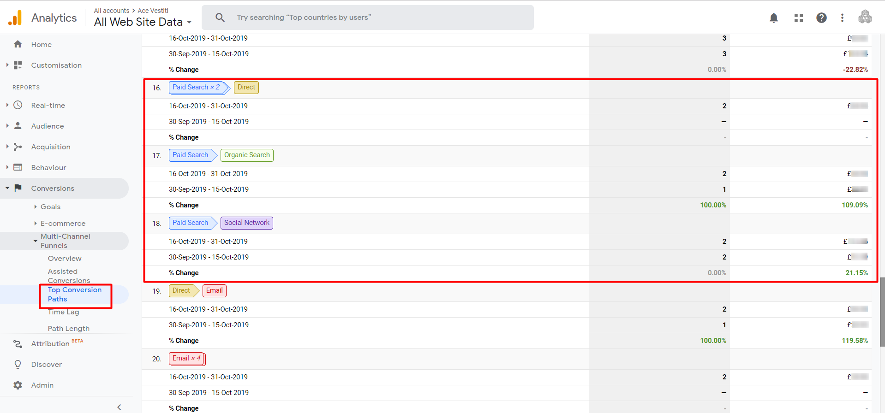
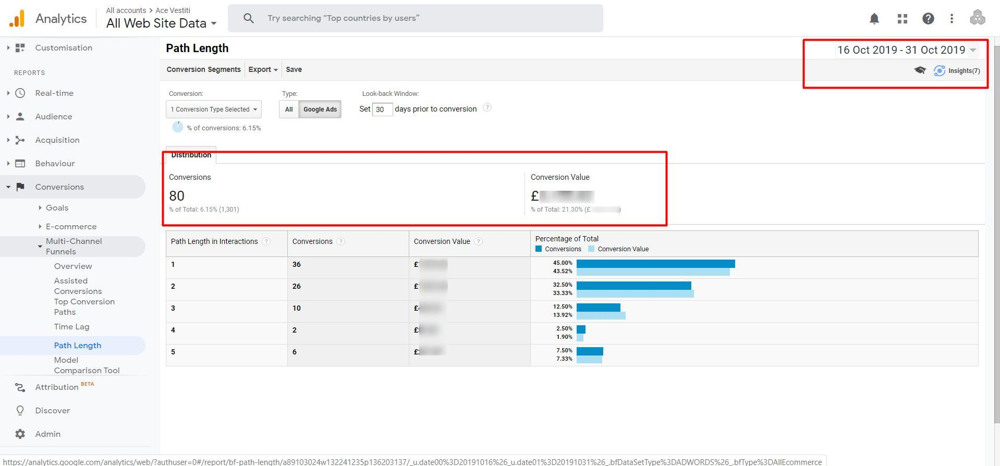
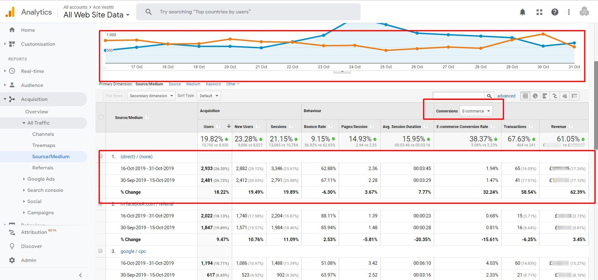
Case 18
Giant eCom: 300+ categories
Client
LeBoutique eCom of apparel and housewares
Objective: grow customers, decrease CPA
Account: since 2011
Initial state
Four accounts - two of them target registrations and sales. Two others are for mobile app and remarketing.
All the accounts campaigns were built via the K50 automatic tool. It was before pMax arised, but even so the crucial campaigns weren’t developed accordingly. There were campaign splits according to devices, demographics and languages as well as different campaigns as remarketing audiences targeting and observation.
In one month we checked every single of them with regards to spent, revenue, ROAS and other KPIs and rebuilt them from scratch (up to 3000 ad groups per single search campaign).
Work done
Improved ad copies and created alternatives to split test
Improved ad assets and created new ad asset types
Adjusted bidding strategies and bids
Redistributed budgets
Paused certain ad groups and keywords and added other ones
Some of the campaigns were splitted according to seasonality
Campaigns were also splitted according to demographics, product categories and language
Dedicated shopping campaigns for housewares was created (weren’t advertised before)
Overall delivered optimization took up to three weeks of our dedicated team to review and adjust literally every keyword and dynamic URL after thorough performance review. Worth to mention that prior to our management there were plant of remarketing audiences in the account as well and targets, that weren’t properly tracked
We have agreed target KPIs, we had to reach in just one month.
Important requirement also was the fact that campaigns from different accounts shouldn’t have gotten into the same audition according to Google Policies.
Here is the step by step data: 17/11/2021 - 16/12/2021 vs 18/10/2021 - 16/11/2021
Paused underperforming and high spending campaigns, taking in account both direct and assisted transactions (and registrations)
transactions were set as secondary(!), but not primary conversions
most of remarketing audiences weren’t added to campaigns, but interest audiences were added as observations
Results
Main Google Ads account:
Second Google Ads account:
Next period: 01/12/2021 - 31/12/2021 vs 01/11/2021 - 30/11/2021
Main Google Ads account. Because of the proper performance and settings review of Google
Ads and Google Analytics accounts, delivered optimization Transaction grew by 30.34% and CPA
Transaction decreased by 19.20%
Second Google Ads account
Transaction decrease by 64.07%
Transaction grew by 62.76%, CPA Transaction decreased by 32.94%
We planned to decrease CPA up to 5-15%:
According to the stat of 17.11.2021 - 16.12.2021 vs previous period of 18.10.2021 - 16.11.2021), we shifted the promised KPI improvement by 200%.
Transaction grew by 7%, CPA Transaction decreased by 76.78%
We planned to decrease CPA up to 5-15%
According to the stat of 17.11.2021 - 16.12.2021 vs previous period of 18.10.2021 - 16.11.2021), we shifted the promised KPI improvement by 500%.
Same optimization approach led to Transactions increase by 37,44% and CPA
From the account
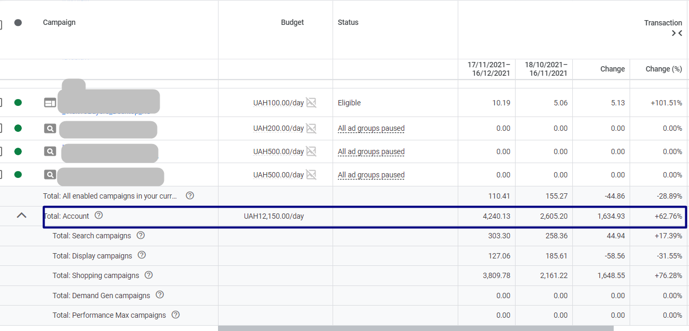
Case 19
eCom, yoga accessories & apparel
Optimization tasks
1. Detailed search campaign semantics, quality score improvement, RSAs 2. DSA launch for categories 3. Search and dynamic remarketing launch 4. Bid and bidding strategies adjustment
Results
Ad campaigns were launched on 13.03.
30 transactions and 40K UAH revenue from 13.03 to 13.07 via PPC channel 9000 UAH of ad budget 1046 assisted conversions for the same period:
Client previously spent 4000 UAH and got only 4 conversions
Challenge: 95% of orders are done via call, but not online purchase
Setup & optimization:
1. Separate campaigns for every brand, product category and language:
5. Kept watching traffic, spent, demand and purchasing power changes 6. Call tracking and GA4 eCommerce were set up
Calls 01.09.2023 - 31.01.2024 vs. 01.04.2023 - 01.08.2024
Orders (+100%)
Revenue grew by 871%
Calls 01.02.2024 - 30.04.2024 vs. 03.11.2023 - 31.01.2024
СРА 1200 UAH (including of the bulk orders)
Search
DSA & DSA page URL (two languages)
Shopping
Display remarketing
pMax (once they appeared): different audiences, search topics, with and w/o products 2. Analyzed competitors strategies and ad copies 3. Semantic was build with every website product and piece of content + competitors 4. Once we had some data we set bid adjustments for locations, demographics and devices according to the performance stat.
Calls (+136%)
Calls 193 (+14,66%)
Conclusions
Still using shopping campaigns, but only for most popular
Watching auction stat as well as top positions impression share
Staying in touch with the clients about every product category and best sellers.
We have been with this client since the very beginning in 2021. We keep watching the market changes, redistribute budgets and bids, adjust all the account aspects
Case 21
B2C lead gen, dental clinic
Objective: grow clients from website traffic without call tracking implementation (company brand
is connected to number 13 and its presence in the phone numbers)
Optimization tasks
Detailed semantics development, ad groups split and match type combinations:
A significant number of keywords added (English, Russian and Ukrainian languages):
Detailed cross-negative and negative keyword lists:
Results
With regards to proper initial and ongoing optimizations, the account quality score, ad impressions, and website traffic have significantly grown as well as a decrease in cost-per-click (in comparison to the previous year’s management):
Campaign optimization statistics:
From the account
Case 22
B2B/B2C lead gen, Translation agency
Objective: grow number of leads and decrease cost per lead for the translation agency (a highly
competitive market with CPC around 40 UAH, up to $2.
Optimization tasks
1. Detailed semantics development 2. Dynamic keyword insertion ads and extensions 3. Local language search queries 4. Bid adjustments 5. Negative and cross-negative keywords 6. Search remarketing
Results
1. Conversions growth of +266% 2. Cost per conversion decrease of -23.6% 3. Conversion rate growth of + 23.5% 4. Cost per Click decrease of -5.8% 5. Significant growth of impressions and clicks
From the account
Beyond paid ads
What we have built
The cases above are advertising accounts. The work on the other side of
this company — LinkedIn, automation, custom AI — has no client account to show, so the
evidence is what we have built and run ourselves. There are no metrics on this page
because there is no client whose numbers these would be.
Top-Rated Team top-rated.team
Several service doors sit in front of one workspace. A visitor asks a question on the door that matches their problem, and when the conversation turns out to be worth keeping it becomes a room at an address of its own, where the client, our people and subject-matter AI agents talk in the same channels. Each agent answers only from the corpus it was given and never from another agent's, so it cites the page it used or says plainly that it cannot answer. What one room can spend on agent answers is bounded three separate ways, and an answer carried from a door page into a room is signed by the server that produced it, so text handed back by a browser cannot be passed off as ours. This is the same application we build for clients on the custom-AI-builds door — which is why the panel on that door is the demonstration rather than a picture of one.
Offers as data, not pages: nine rows in shared/doors.ts, seven of them live today. The row decides which agent opens the conversation, which corpus that agent reads, and whose legal name, terms, invoice line and contact the resulting room prints — so a visitor who came in through a partner's door never sees our invoice.
A no-signup room at /w/:token where the URL is the entire credential: channels, a message column, a task panel, a member rail of people and agents, and a share bar. It is a separate JavaScript chunk the door pages never download.
Per-agent grounding with no fallback. server/ai/kb.ts retrieves from the one namespace named on the agent and can reach no other; with no API key, no corpus, or nothing matching, the agent says what it is missing instead of answering from memory. Eleven agent rows are defined and seven of them read a corpus, across six distinct namespaces.
Three bounds on what one room may spend on agent answers, in server/spend.ts, checked before the model is called: a count of 30 agent turns per room per rolling hour, a 20-minute clock on one unbroken run of activity that starts over after 10 minutes of quiet, and a monthly dollar budget per room that warns the operator at 80% and pauses the room at 100%. They fail in different ways on purpose — the count catches a fast loop, the clock catches a slow one pacing itself under the count, the budget catches few turns each enormous.
A second, separate monthly ceiling for the public panel at /api/ask — counted both in total and per calling address — because that endpoint is on every door, needs no token, and belongs to the internet rather than to a client.
Answer receipts. An answer streamed to a door page is HMAC-signed with a key generated per process, and a carried answer is dropped unless the signature matches that exact text, so nobody can POST an invented 'agent' message and get a real room at a real address on our domain to show as evidence of a promise. A restart simply makes the room ask the agent again.
A room that cannot say which company is answerable for it says so: with no door stamped on it, the footer and the member rail report the fault rather than defaulting to the house name.
Degradation as a feature: the whole thing runs with an empty .env. No OpenAI key and the agents say live answers are not configured while the human routes keep working; no DATABASE_URL and storage is in-memory with the same interface; no embeddings file and retrieval drops to keyword scoring. Nothing is faked in any of those states.
One Node process serving the JSON API, the WebSocket at /ws and the built client — React 18, Vite, TypeScript, Tailwind, Radix / shadcn-ui, wouter, TanStack Query, Express, ws, Drizzle over Postgres (optional) and the OpenAI SDK. The workspace token is kept out of stdout and out of the outbound lead webhook, /w/ is disallowed in robots.txt and served with X-Robots-Tag noindex, the agents' house rules forbid accepting passwords, API keys or ad-account credentials pasted into chat, and workspace creation, lead capture, invites, messages and /api/ask each carry their own per-IP rate limit.
AdGrant.AI adgrant.ai
AdGrant.AI is a free web tool for nonprofits that already hold a Google Ad Grant: it takes the nonprofit's website URL, the 10-digit Google Ads Customer ID and the target languages and locations, analyses the website, and generates a full account structure — campaigns, ad groups, keywords, responsive ads, sitelinks, callouts and structured snippets. The generated structure can be reviewed and downloaded as one CSV per type, or written straight into the nonprofit's own Google Ads account by what the page calls "Automated API Upload" — "Upload everything directly to your Google Ads account via API. No manual work required." — which requires the account to be connected to the Top-Rated Team manager account (MCC), a connection the Terms say "can be revoked at any time through your Google Ads settings". Free use is capped at 3 verified Customer IDs and 3 total generations, gated either by LinkedIn sign-in (the page says it uses only the profile URL, to limit free generations) or by sending the Customer ID as a LinkedIn message; the site directs anyone needing more capacity or premium service to contact it on LinkedIn. Alongside the tool the same domain runs a content library — an Ad Grant glossary, case studies, tips and tricks, starter templates, and nonprofit guides by vertical and by city — plus a four-item Stripe checkout list and a 20% lifetime affiliate program paid out by PayPal.
React single-page app served as a static build (react-dom in the bundle; /assets/index-<hash>.js as an ES module, the standard Vite output shape, and 'vite' appears as a string in the bundle)
wouter for client-side routing — live routes seen in the bundle: /, /resources, /templates, /templates/:slug, /nonprofits, /nonprofits/:niche, /nonprofits/:niche/:location, /nonprofits/locations/:location, /privacy-policy, /terms-of-service, /admin, /affiliate, /affiliate-admin
Tailwind CSS with shadcn/ui on Radix UI primitives (a 'shadcn-card' class, and Radix component names such as Dialog and Switch, appear in the bundle)
lucide-react icon set
zod schemas for the generator form (website URL validated as a URL; Customer ID validated against /^\d{3}-\d{3}-\d{4}$/)
A query-cache data layer over its own JSON API (/api/generate, /api/upload/:id, /api/export/:id, /api/csv/:id/<type>.csv, /api/locations/search, /api/content/pages, /api/templates, /api/auth/linkedin, /api/auth/session)
Google Ads API — the Privacy Policy lists it as a third party the service shares information with, "To validate keywords and upload account structures"
Google Ads manager account (MCC) named 'Top-Rated Team' as the link the automated upload runs under
LinkedIn OAuth sign-in (/api/auth/linkedin), used per the page only to cap free generations
Stripe Payment Links for the paid services (buy.stripe.com checkout URLs)
PayPal for affiliate payouts
Google Tag Manager (container GTM-K9PQW2ZM)
Google Translate website widget, auto-selected from navigator.language, offering ru, uk, cs, en, de, fr, es, it, pt, pl, zh-CN, ja, ko
Google Fonts
An admin panel and a separate affiliate-admin dashboard, both token-gated, shipped in the same bundle
Top Voice top-voice.ai
Top Voice is a LinkedIn visibility platform built around reactions rather than outreach: you describe your business and who you sell to, and it generates a Signal Flow of boolean searches that assembles a feed of your target prospects' posts, then reacts to those posts on behalf of your profile or company page with natural, human-like timing. Because LinkedIn resurfaces posts you have reacted to in the feeds and notifications of the author and the author's own connections, the profile or page earns inbound visits instead of sending cold messages. The app is organised in three sections: Research (Influence Flows built from real influencer voices), Appear (Content Studio and Autopilot publishing) and Grow (LinkedIn Boosting). The page is equally explicit about what it refuses to do: no bulk cold outreach or DMs, no engagement pods, and no AI comments.
Instant AI Setup: four fields generate an Influence Flow, a content campaign and a boosting campaign
Influence Flows - synthesised influencer voices, including custom ones from any LinkedIn profile URL
Content Studio with Autopilot: post copy, images, carousel PDFs and video, published to profiles or company pages on a schedule
LinkedIn Booster: AI-generated Signal Flow boolean searches that assemble a targeted posts feed
Reaction engine with human-like pacing - randomised 5-60 second delays and selectable reaction types
Rented-account pool: dedicated in-house LinkedIn accounts, blocking-free with a replacement guarantee
Performance Plan billing on Stripe: own and rented account slots, campaign slots, proration, auto top-up
Engager and profile-viewer tracking with webhook and Google Sheets delivery
AI Optimize plus an approve-before-apply queue, so no AI suggestion changes a campaign unreviewed
MCP connectors - Add to ChatGPT and Add to Claude - alongside in-app, web-chat and LinkedIn DM entry points
Guided in-app walkthrough for each section, plus referral and three-level affiliate program
WarmLike warmlike.com
WarmLike is a done-for-you LinkedIn visibility service built around a second, managed page rather than your own account. The site describes the mechanism in four steps, in its own words: you “Tell us your profile & niche” over a LinkedIn message or a short call (“That's the whole setup — no dashboards, no login, no password”); WarmLike then “spin[s] up a polished LinkedIn company page from your business — on-brand name, logo, and description”, called a pre-lander and described as “a warm front door that points target prospects to your profile”; that page “proactively engages the posts of your exact target prospects — reactions and comments that ramp up gradually”; and the prospects it engaged “get notified, check it out, and find your reshared post — with you as its author”, then “click straight through to your personal LinkedIn profile, hands-off”. Content is part of the service: “Every day we write a fresh, niche-tuned post and suggest it to you”, reviewed and approved from a private link, published to your own profile, and then reshared by the managed page. The positioning is explicitly compliance-first — the headline reads “Boost your LinkedIn Profile, without linking it anywhere. 100% secured & compliant.”, and the copy states “We share access, not you. No pods, bots, spam, AI comments. Your LinkedIn account is untouchable: violations and ban free.” The FAQ answers “No. We never log into or post from your personal profile” and “There's no login to create and no password to share.” “Warming” is defined on the page as building the page's presence gradually “so growth looks organic and stays healthy, never a suspicious overnight spike.” Four summary stats run across the page as labels, not measurements: Daily / on-brand posts, Zero / logins to share, Gradual / natural warming, 24/7 / hands-off growth.
A single-page marketing and onboarding site at warmlike.com. It is a client-rendered React/Vite application: the served HTML is a 13 KB shell with an empty <div id="root"> and no prerendered body, so all visible copy is delivered by JavaScript. The bundle is shared with Top Voice and switches to the WarmLike app by hostname, matching warmlike.com, warmliker.com and warmlikes.com. Beyond the landing route the WarmLike app registers routes for /message, /hub/:token, /preview/:token, /post/:token and /demo — consistent with the “review everything from a private link” flow the copy promises, though those token routes were not exercised. The landing page itself carries a hero with a 2-week-free-trial badge, a numbered explanation of the mechanism, a four-step “You / We build / We boost / You grow” walkthrough with illustrated LinkedIn mockups, an explainer video block (“A 60-second look at how WarmLike grows your LinkedIn presence — fully managed”), an interactive pricing and projection widget driven by a “boosters” slider, a five-question FAQ, and CTAs that all resolve to either a LinkedIn message or a booked call. HubSpot chat and a Replit analytics script are loaded on the page.
Upwork Proposal Agent
Runs inside Claude Code as the /upwork-apply skill and drives the user's own logged-in Upwork session through the Claude in Chrome browser tools — there is no cloud browser and no shared Upwork account. A round opens the search URLs from the user's own profile config, checks each listing against a seen.md watermark and an applied.md log so nothing is triaged or applied to twice, drops anything that fails the profile's reject rules or any of the client's stated Preferred qualifications, and writes an English cover letter plus screening answers built only from the evidence bank in that user's config. It then fills the Upwork proposal form field by field — rate or milestones, letter, each screening question, case-study attachment — and stops: pressing "Send for X Connects" requires the user to have confirmed that specific proposal in that session, a rule the skill states outranks the auto-reply setting. Scheduled and background runs are stricter again — they never open the proposal form at all and leave drafts as files for review.
Claude Code skill: SKILL.md plus references/ (upwork-pages.md page-and-form map, inbox-flow.md, onboarding.md) at ~/.claude/skills/upwork-apply
Modes as skill arguments: setup (in-chat onboarding), a default interactive round, duty (turns the live session into the scheduler), background (drafts only), inbox, sync
Browser control via the Claude in Chrome MCP tools (mcp__claude-in-chrome__*) against the user's own signed-in Chrome; CAPTCHA, logins, payments, identity verification and Connects purchases hand control back to the human
Markdown state kept deliberately outside the skill folder, because a plugin update overwrites that folder: a personal profile config (rates, tone, reject rules, evidence bank), a case library, and an upwork-logs/ directory holding applied.md, seen.md, drafts-<date>.md, slots.txt and last-run-epoch
Incremental scanning: results are read newest-first and matched by job ID against seen.md; two consecutive already-seen listings stop that URL, and a catch-up after downtime pages deeper so nothing new is missed between sessions
Rate-limit and anti-bot guards written into the skill: daily proposal and Connects limits, minutes of spacing between sends, a cap of 3 drafts per background run and 5 per day, and a skip if the previous round ran under 20 minutes ago and found nothing new
Optional Google Sheet sync (Profile / Evidence / Answers / Schedule tabs) for editing settings away from the machine, last-write-wins by timestamp, off by default; the chat/GPT/Grok settings front ends can only edit the Sheet and take no Upwork actions
Scheduling: duty mode reads slots.txt and creates one recurring Claude Code cron task per slot; an optional launchd job is offered as a macOS safety net, and a self-paced /loop is offered as an alternative because cron slots can bunch up
Experimental Node stdio MCP server (mcp/upwork-agent/server.js) exposing local profile, drafts, inbox-pending, run-status and schedule tools; its own file header states the tools touch local profile/logs only and never Upwork Send
Distribution as a Claude Code plugin for other people to install: a Stop hook runs sync.sh after each session, which mirrors the live skill folder into a git repo, bumps the plugin.json patch version, commits and pushes; each user runs it on their own machine with their own config and logs
Being.Marketing: Your Existential Coach being.marketing
A quiet companion for rest from anxious purpose-hunting, tasks, and roles, and a clear mirror for your inner language — the listing invites you to lay down a concern or identity like a stone. It is offered two ways: as a custom ChatGPT, or reached from the web without logging in to ChatGPT, which the page describes as being for ultimate privacy. The page also says your dialogue can seed your GPT's training data or AI prompt to share as a custom ChatGPT, so others can quietly sit beside it as well. It is published and listed free on the being.marketing storefront.
Custom ChatGPT — offered as the "Custom ChatGPT" option on the listing
A web version usable without a ChatGPT login — the "W/o login to ChatGPT" option, described on the page as being for ultimate privacy
Published through a Gumroad storefront served on the being.marketing custom domain (product permalink /l/being)
About these pages
How to read them
Every figure comes from the advertising account it describes, over the period
that page names, in the form the client saw it. Where a case gives no figure for something,
the account did not measure it — a gap is left as a gap rather than filled with an estimate.
These are advertising results. They are evidence of work done on comparable
accounts and they are not a forecast: what an account does next depends on its market, its
offer and its budget, and anybody who tells you otherwise before seeing it is guessing.
The hours and the job-success score on the cover are the public record on
Upwork and can be checked there.
Talk to a person
Book a call20 minutes, free, with the person who would do the work
Open a roomIts own address, an agent and our people already in it